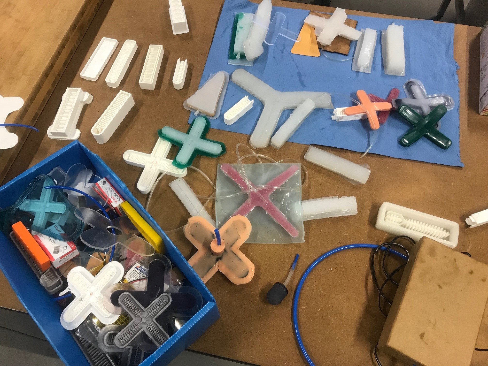
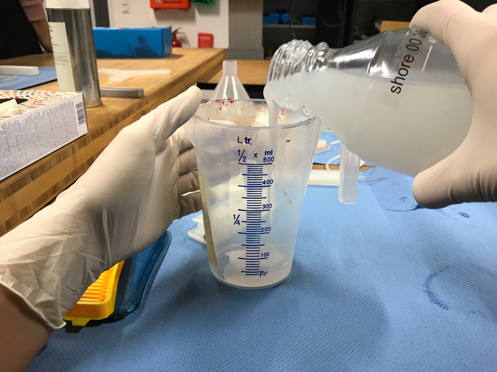
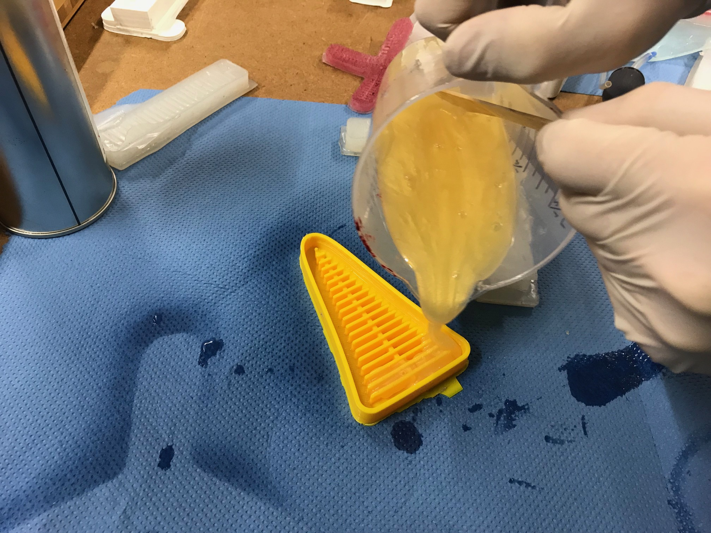
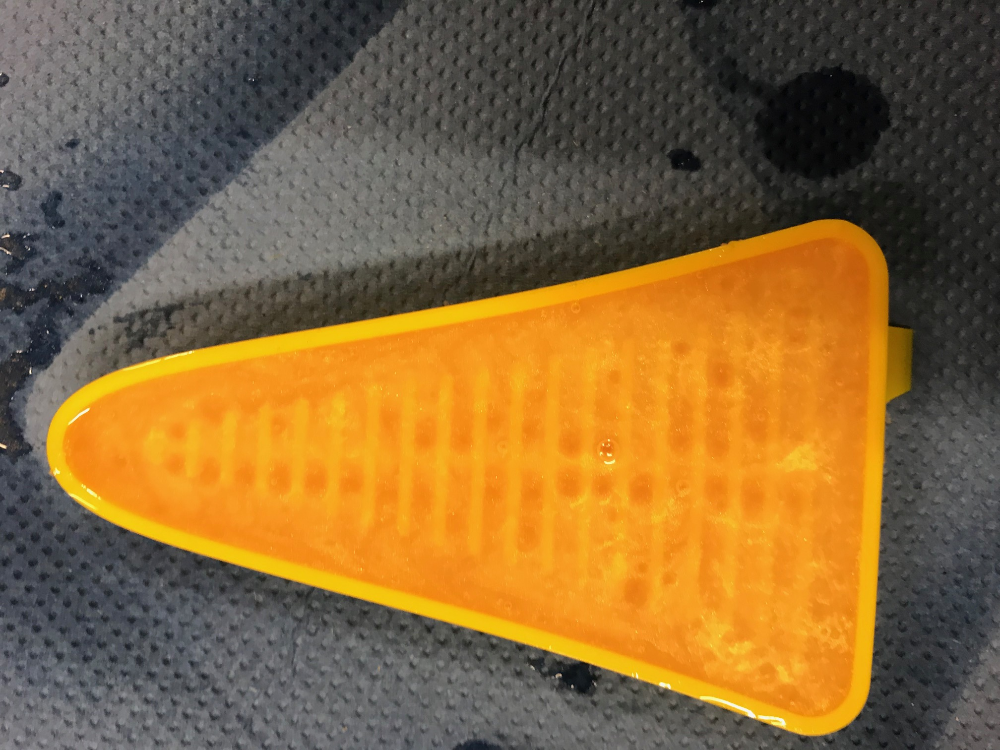
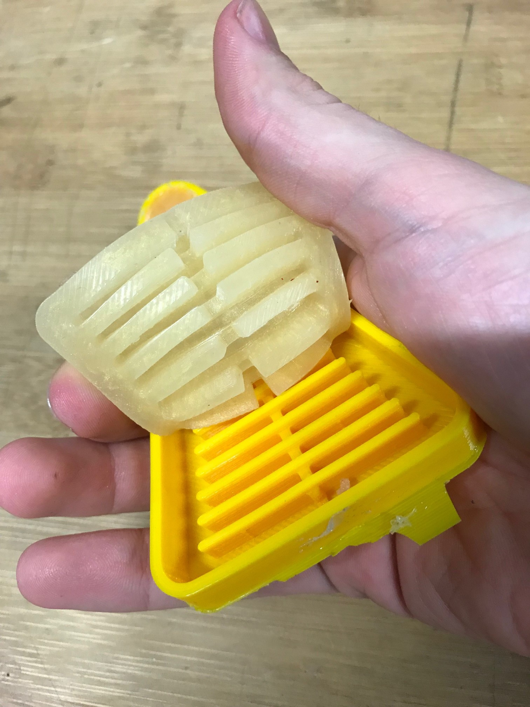
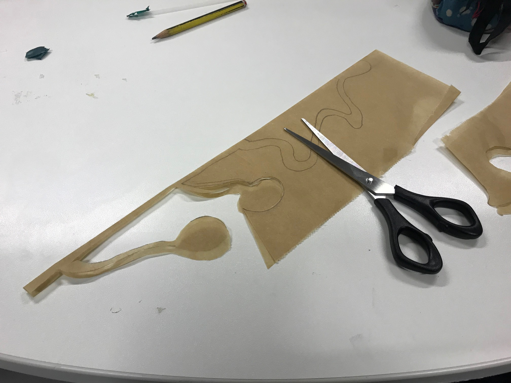
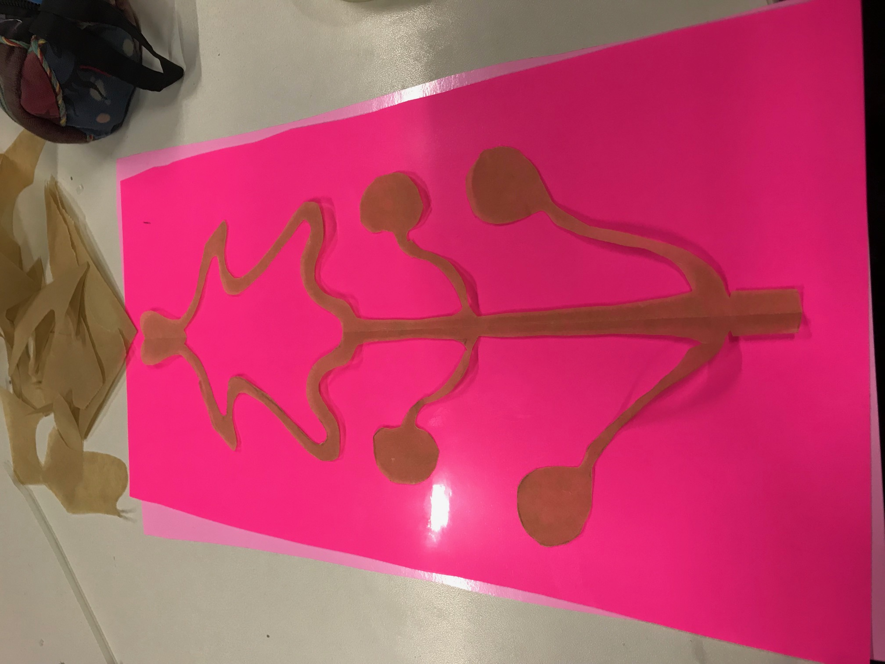
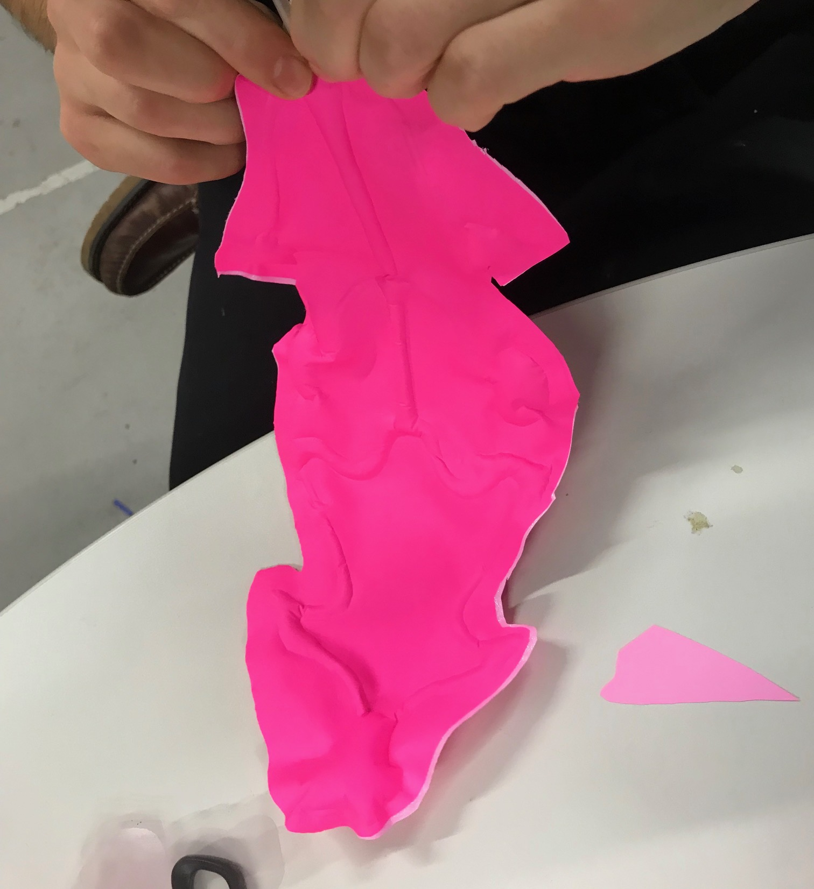

During this week we were both introduced to silicon based soft robotics and paper based soft robotics. Both of them produce movement when inflated with different volumes of air, but depending on the material used the range of movement will be greater.
It should be noted that during this lecture, we counted with the presence of a fashion designer from Amsterdam, who was interested in working with soft robotics for future designs, as well as with the director of the Fablab of Auckland, New Zealand.
Soft robotics.
Soft Robotics can be defined as the specific subfield of robotics dealing with constructing robots from highly compliant materials, similar to those found in living organism.
In contrast to conventional robots built from rigid materials, soft robots allow for increased flexibility and adaptability for accomplishing tasks, as well as improved safety when working around humans. These characteristics allow for its potential use in the fields of medicine and manufacturing.
Silicon-based soft robotics:
For being able to develop the task, four main materials were needed: a cast in which the silicon will be poured, an anti-adherent spray that will help for the silicon not to stick to the cast and be removed without breaking; and finally silicon type A and type B , that when mixed together will harden and create the soft robot.
The first task was choosing if we wanted to create a more or less flexible soft-robot. In order to do that we had two different kinds of silicon: the silicon rubber Neukasil or the RTV50. The RTV30 is more elastic, but can be teared easily, in contrast to the RTV50 that is less elastic, but is more difficult to tear. We decided to work with the RTV30, so in order to get the right proportions we mixed half the volume of the RTV30 a with the RTV30 b. We decided to add a little of golden colour in order to make the mixture more appealing.
Once we had mixed the different silicon properly, we had to spray the cast with the anti-adherent spray, and afterwards just pour the mixture and remove all the air bubbles.
 After introducing the cast in the oven for 15 minutes, we took it of, took the silicon out from the cast and created the top, that has to be a simple layer of silicon.
Paper-based soft robotics:
In order to create paper-based soft robotics you need to take into account the way you draw the different patterns. If your draw a tree-like pattern, the robot will shrink, and if your draw a more oval one the robot will just pump.
The first thing that we did was to fold a piece of baking paper into two pieces, since what we want is a symmetrical pattern, and then I drew a combination in between trees and oval like patterns. Then, the next step is to cut the pattern your have, since you will put it in between two different plastic sheets that will contain the air you pump in.
Afterwards it is important to cut the plastics sheets between which I put the baking paper. We cut them into the shape near to the baking paper one.
Then, in order to stick the different plastics sheets together we put them into an special over that will reach a temperature of 120 degrees, being carerful of leaving a hole in which we will later stick the straw for pumping the air in.

The last step of creating the paper-based soft robotic is to attach a straw so the body can be inflated when the air is introduced. This straw is sealed using an industrial dryer. Below a result of the soft robot can be seen.
